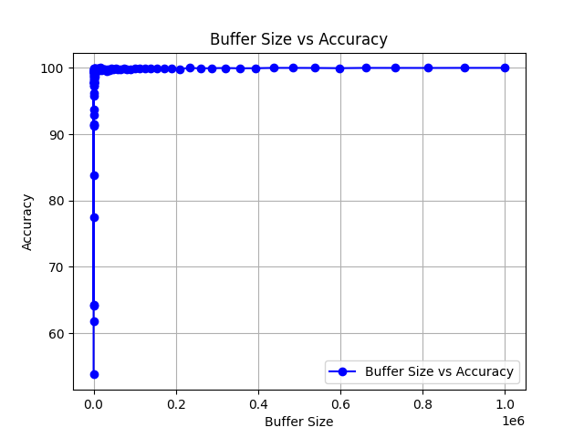
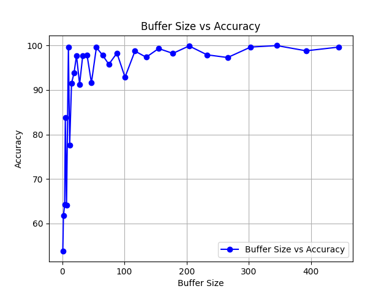
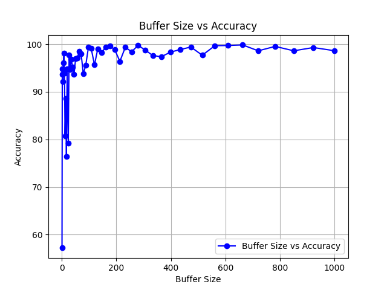
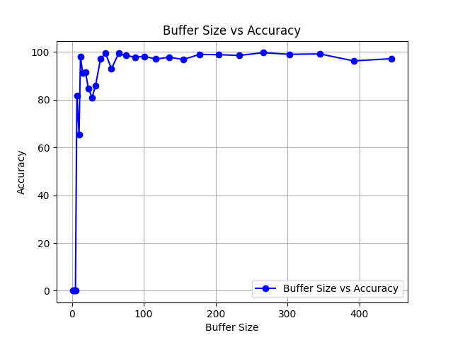
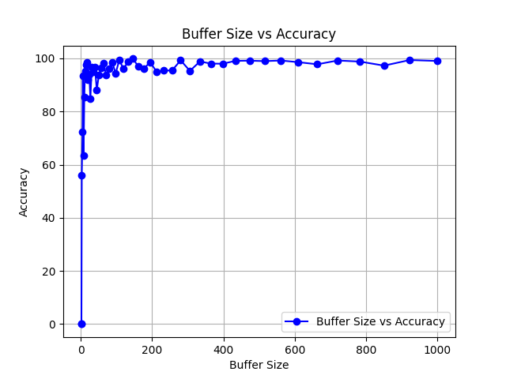
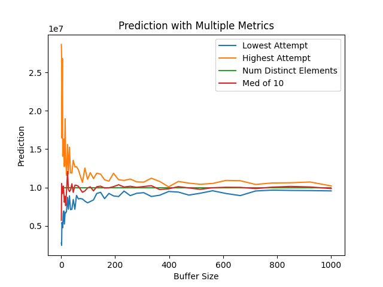
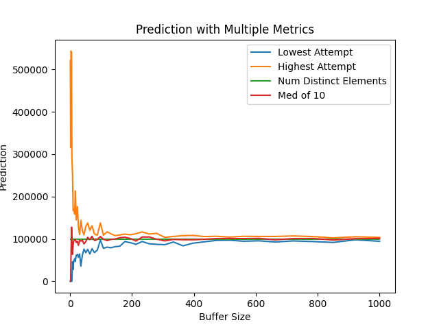

Introduction
The problem of counting the number of distinct elements in a data stream, often referred to as the Count Distinct Problem, is a widely studied problem in the field of computer science. The Count Distinct Problem has applications in various fields. For example, say that you own a website and you want to count the number of unique visitors (IP addresses) that are visiting your site in the past month. This is one use case of the algorithm but there are also applications in biology, networking, and more.
This problem can be solved trivially if we assume we have an effectively infinite amount of space. We would simply store the values into a data structure, such as a Hashmap, that can efficiently search and add values. Unfortunately, these data streams are rarely so small as to afford us the convenience of using a proportionally large data structure. As such, there is motivation to design an algorithm for this problem that does not have space that scales with the number of distinct elements in the stream. This restriction has led computer scientists to designing algorithms which can approximate the number of distinct elements while using a fraction of the space.
The HyperLogLog Algorithm is a popular solution to this problem. However, recently Sourav Chakraborty, N. V. Vinodchandran, and Kuldeep S. Meel proposed another algorithm. This algorithm was then refined by Donald Knuth, who also named it "The CVM Algorithm" (referring to the first letter of the last names of each of the original creators) in the same paper. Unlike the HyperLogLog algorithm, which uses hashing, the CVM algorithm makes use of clever statistics in order to provide its estimation. This means it is not only simple to understand, it's also simple to analyze.
In this post I'll be going over the algorithm, how to implement it, it's runtime, the proof of its correctness, and then I'll also provide a statistical analysis of its accuracy.
Treaps
Both the implementation and the runtime analysis of the CVM algorithm will make use of a lesser known data structure known as a Treap. If the reader is not familiar with Treaps they are recommended to read this section. If you are already familiar with Treaps feel free to skip ahead.
A Treap, as the name suggests, is a combination of a Binary Search Tree and a Max-Heap. Each node has a key and a value. The tree is sorted like a Max Heap in terms of the value, meaning the value of a node is always greater than the value of its children, and it is sorted as a Binary Search Tree in terms of the key, meaning the key of the left child will always be equal or less then the key of the parent, and the key of the right child will always be greater than the key of the parent. This allows for finding the max value to be an \(O(1)\) operation. Searching, inserting, and deleting are all expected to be \(O(log n)\) when the values are randomly generated (as they are in this implementation). Otherwise, it is possible to construct an imbalanced Treap which will have search, insertion, and deletion times of \(O(n)\), but this is not a concern for us.
The Algorithm
Algorithm CVM
Input: Data stream A = [a1, a2, ..., an] of size n,
buffer size s
Output: Estimation of the number of distinct elements in A
t ← 0
p ← 1
B ← Empty Treap
while t < n do
t ← t + 1
a ← at
if a is in B then
delete a from B
end if
u ← random number in [0, 1)
if u ≥ p then
NEXT
else if |B| < s then
insert (a, u) into B
NEXT
else
(a', u') ← (a, u) of max u in B
if u > u' then
p ← u
else
Delete (a', u') from B
Insert (a, u) into B
p ← u'
end if
end if
end while
Return |B|/p
end function
The runtime of the algorithm is \(O(nlogs)\) since it iterates over every element in the data stream and during each iteration there is a chance that the algorithm will add, delete, or search in the buffer (which is a Treap of size \(s\)). This runtime is pretty good, since we were expecting at least a runtime of \(O(n)\) since you'd expect the algorithm to iterate over every element in the stream (if the stream was live rather than static you'd be doing the analysis as you receive the data anyways). Then we simply have an increase by a factor of \(log(s)\), and \(s\) will be small compared to \(n\), as we'll see.
While the algorithm looks easy to implement it may not be immediately apparent why it provides an estimation of the number of distinct elements in the stream. The general idea is that the algorithm maintains the property \(Pr(a_j \in B_t) = p_t, \; \forall j \in \;[1, t]\). If you have a keen eye, you might see what the trick is, but no worries if you haven't caught it, first let us check whether the algorithm successfully maintains this property or not. Within the algorithm, at a timestep \(t\) an element is only added to \(B\) when the random uniform deviate \(u\) associated with the element is less than \(p_t\). This implies that the probability of an element being in \(B\) is \(p_t\) However, we do update the value of \(p\) throughout the algorithm meaning we must make sure that every element in \(B\) at that point has a \(u\) value lesser than \(p\). If \(u > u'\) then we set \(p = u\), the property is upheld in this case because \(u'\) is the largest value of \(u_j\in B\). If \(u \leq u'\) then we delete \(u'\) which is greater than \(u\), and insert \(u\) into \(B\), then we set \(p = u'\) as such, \(p\) must be greater than \(u_j\in B\) in this case since \(u' \geq u\) and \(u'\) was the maximum value of \(u_j\in B\). This shows that the property is upheld during the execution of the algorithm.
Now that we've proven the statement \(Pr(a_j \in B_t) = p_t, \; \forall j \in \;[1, t]\) is true, let us show how this fact can be used to estimate the cardinality of \(A\). If any element in the stream \(A_t\) has a probability \(p_t\) of being in \(B_t\) it can be said that the expected cardinality of \(B_t\) is equal to \(A_t \times p_t\). In other words \(E[|B_t|] = p_t \times |A_t|\). Finally, we can express the same statement as \(\dfrac{E[|B_t|]}{p_t} = |A_t|\). This shows why our return value in the CVM Algorithm gives a valid estimate of the cardinality of \(A\). If you aren't used to working with probabilities this might seem a bit tricky. Just take a moment to really think about it and remember that the equations use random variables and expected values.
Proving that the CVM algorithm is a valid estimation of the Count-Distinct problem is great, but with approximation algorithms we tend to want to know the competitive ratio, in other words, we want to know how wrong the estimation might be. Unfortunately, Donald Knuth was not able to identify the upper bound on error in his paper on the algorithm. Proving this upper bound is beyond my ability as well, however, the lack of a concrete upper bound or competitive ratio motivated me to run simulations of the CVM Algorithm using different buffer sizes in order to at least observe the margin of error on average cases. This will hopefully provide anyone who wishes to use the algorithm with a rough idea of what a suitable buffer size would be for their data stream. For the sake of the analysis I posit 2 different methods of creating data streams of size N.
Stream 1: This stream simply counts up from 1 to N and thus only has distinct integers.
Stream 2: This stream follows a normal distribution in terms of the frequency of an integer being present in the stream. In other words, one integer will be present the most in the stream, two other integers will be present marginally less, and again for the next two integers.
Since I wanted to see how the accuracy of the algorithm would change based off of the buffer size I decided to run the algorithm at different buffer sizes and plot charts depicting Buffer Size vs. Median Accuracy of 10 Attempts. I used buffer sizes that increased exponentially for my data points in order to save time during the simulation and reduce the inclusion of unnecessary data points.
Here is a figure plotting buffer size vs accuracy for stream 1 constructed on 1 million elements.
As we can see, once the algorithm reaches a certain buffer size the benefit of increasing the buffer size is marginal. This is good news since it tells us our buffer size doesn't need to be that large in order to get an accurate estimate. But the graph itself doesn't tell us that much more since it has so much data crammed into it. Let's take a closer look at the inflection point.
Now we can see that it takes a buffer size a bit larger than 100 in order to get a result close to 100%, and going larger from this point on seems like overkill. What would the graph look like if the stream was constructed on 10 million elements?
The behavior actually seems relatively similar, sporadic at first, and then steadying after a specific value. But this time the trend steadies after a buffer size a bit larger than 200. So we can get similar accuracy on a stream 10 times as large by only doubling the buffer size.
Let's make the same comparison for Stream 2. Firstly, a graph for Stream 2 built on 1 million elements. In this case, a buffer size of around 60 seems to do the trick, with any larger being overkill. As we can see the graph for Stream 2 quickly stabilizes at a high percentage accuracy while the graph representing Stream 1 requires a larger buffer size before it stabilizes. Stream 1 had 100% distinct elements while stream 2 had 1%, which could be one reason for the need for a smaller buffer size. As such, if a developer is anticipating a low amount of distinct elements in their data stream they may opt for a smaller buffer size.
 In the stream of 10 million elements our baseline buffer size looks to be at about 100. Which follows a similar to trend to when we increased the size of Stream 1 to 10 million. This is useful information but it is missing one thing. These charts are all made using a median value of 10 trials. The problem with this is that it gives us an idea for average case, but doesn't portray what the margin of error might be. So let us take a look at graphs which plot not only the average case estimation, but also the lowest and highest estimations.
This is a graph plotting the actual number of distinct elements in the stream, the average case estimation, and the lowest/highest estimations on a stream constructed using the logic of Stream 1 for 10 million elements.
Now here is the same thing but for Stream 2.
As we can see in these graphs, as the buffer size increases the variance drops significantly, while the same is true for both streams the variance is larger for Stream 1 than it is for Stream 2. This could be, again, because Stream 1 has 100% distinct elements while Stream 2 has 1% distinct elements. A larger number of distinct elements will lead to more variance. However, note that the median value on both graphs is still incredibly close to the correct value. Meaning that if you want to get an accurate prediction on a data stream which has a lot of distinct elements it might be better to run multiple trials rather than increasing your buffer size drastically.
In general it seems that the competitive ratio is some function of the buffer size, the number of distinct elements in the stream, and the size of the stream. However, it's hard to get a good grasp of what this function is with the simulations I did. Perhaps in the future I'll revisit this problem with the incentive of investigating the relationship between the margin of error and each of the variables. For now, we can say that it seems the buffer size does not need to increase linearly with the number of distinct elements or the size of the data stream. We also have some data that can help you make an educated guess if you choose to implement this algorithm.